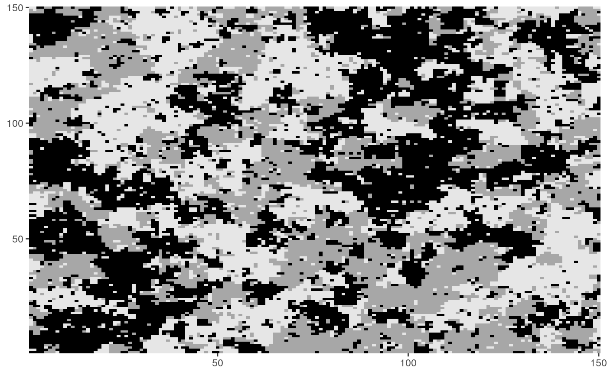
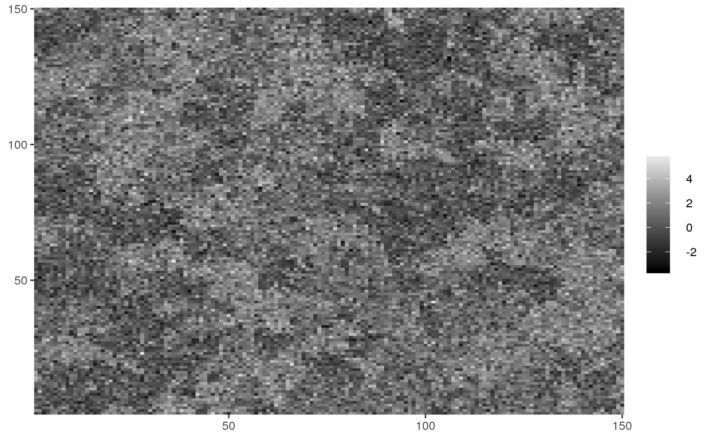
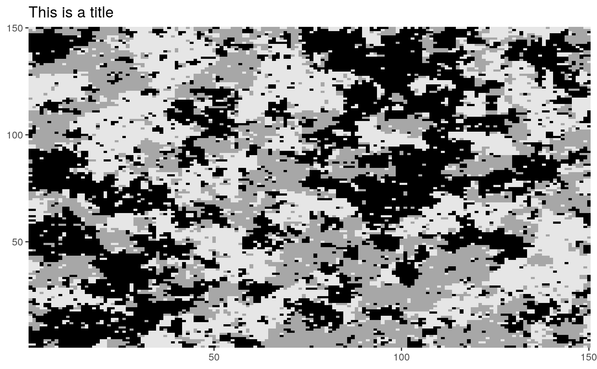
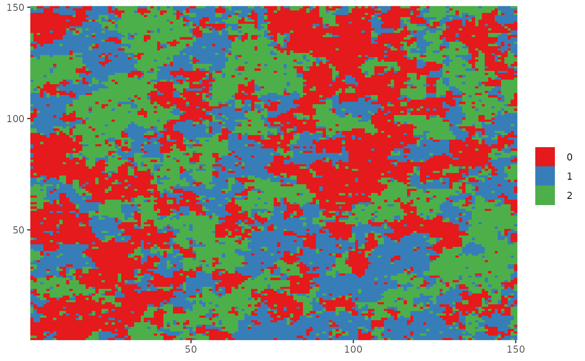

dplot() and cplot() are functions for plotting lattice data.
They are an alternative to base R's image() function using ggplot2
instead.
dplot is used for discrete data and cplot for continuous data, they only
differ in the fact that pixel values are treated as a factor in dplot,
therefore, a discrete scale is used.
dplot(Z, legend = FALSE) cplot(Y, legend = TRUE)
| Z | A |
|---|---|
| legend |
|
| Y | A |
a ggplot object.
Since returns a ggplot object, other layers can be added to it
using the usual ggplot2 syntax in order to modify any aspect of the plot.
The data frame used to create the object has columns named x, y and
value, which are mapped to x, y and fill, respectively, used
with geom_tile().
# Plotting discrete data dplot(Z_potts)#> #>